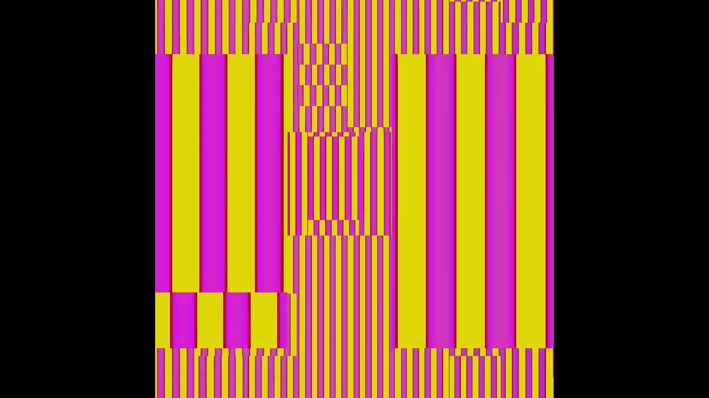

Verti-Horizon
Verti-Horizon
Alexandre Rangel, 2025Criação seguindo o Genuary Prompt 'Linhas verticais ou horizontais apenas'.
Faça a sua co-criação no sistema de NFTs generativos EditArt :
Creation following the Genuary prompt 'Vertical or horizontal lines only'.
Co-creation at EditArt generative art system/marketplace :
https://www.editart.xyz/series/KT1LVvVYdnpcMqFohkdtzoTET9K7PvkY6txk

Tokens 1 a 100, co-criados no EditArt.
Tokens 1 to 100, co-created at EditArt.